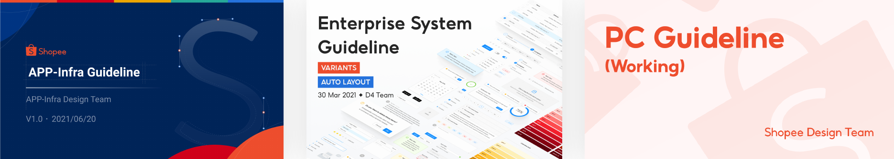
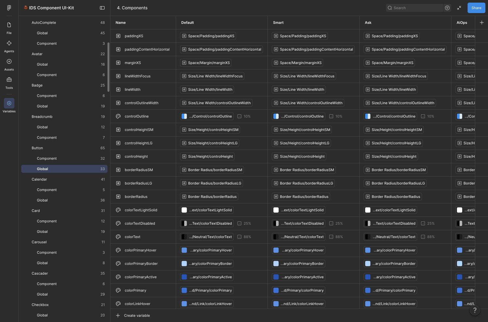
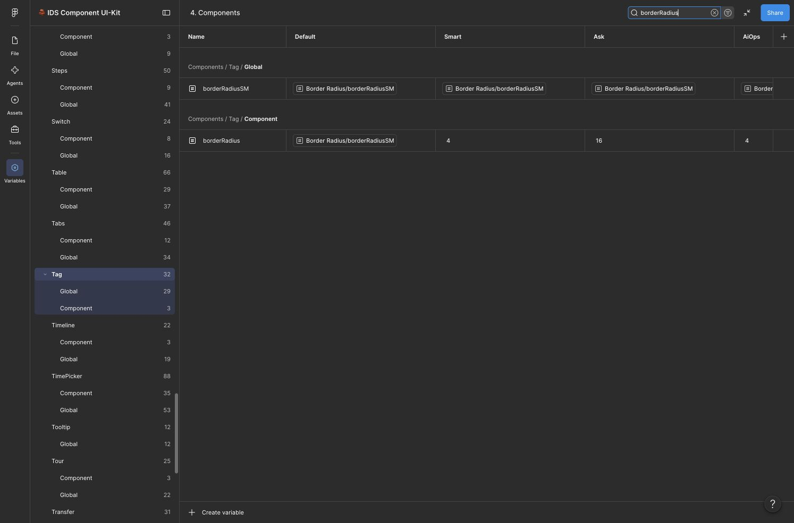

01 / 从分散工具到共同基础
从分散工具，到共同的设计基础
2020 年进入 Infra 时，我面对的是不同工程团队各自建设的内部工具。同样的表格、筛选和操作，在不同产品里有不同的写法。每接一个需求，都可能重新处理一遍相似的问题。
Infra Design System 由我主导从 0 到 1 搭建起来：组件、资产与规范逐步补齐，实现部分与前端共同维护。更多产品在 Space 中汇合，这些差异也被放到了一起。
2021 Q2 汇报 · 第 31 页 · 截图节选

组件统一之后，业务页面里仍有大量重复工作。一个常见的管理页，往往包含页面标题与全局操作、筛选区、表格和批量操作。我把这些可复用的组合继续整理成业务资产和页面模板，让下一次设计可以从已有结构出发。
模板提供页面起点，Patterns记录搜索、编辑、反馈等场景的处理方式，关联组件与模板，帮助使用者按场景做判断。 记录搜索、编辑、反馈等场景的处理方式；具体业务中的对象关系、权限和操作取舍，仍要回到任务本身判断。
原子化设计，到业务页面结构

2023 年我休产假期间，产品团队主导了 Space 的 UI/UX Standards；休完假回来，我接手把已经落地的资产整理到 Space Biz Component 中，并在后续业务里继续维护。
02 / 先弄懂规则，再转译成资产
一次升级，从弄懂规则开始
业务资产越积越多，底层样式不容易一起维护的问题逐渐显现：修改主色后，页面上仍可能留下深浅不一的蓝；尝试暗色适配时，也遇到过层级不清、切换卡顿和闪烁。仅仅把设计稿里的颜色换掉，解决不了这些问题。2024 年推动 v4 → v5 的设计侧升级时，我花了不少精力理解这套 Design Tokens把颜色、字号、间距等设计取值组织成有名称的变量，设计资产与前端代码共同引用。 机制——没有技术背景，这些派生关系起初并不直观：改一个基础值，为什么会影响这么多地方？页面上的标题、说明、禁用文字，又应该分别引用什么？
我先理清 Seed / Map / AliasSeed 提供起点值，算法派生出 Map 梯度，Alias 再把值对应到具体用途——设计时先判断内容角色，再选择引用。 的关系。Seed 提供主色、基础字号和尺寸单位等起点；算法据此生成颜色梯度、字号和间距等 Map；Alias 再把这些值对应到具体用途。这样，设计时可以先判断这段文字承担什么角色，再选择相应的引用。
Token 的派生与语义使用

理解机制之后，我把它转成设计侧可维护的变量结构，梳理组件里的绑定与引用。页面模板也沿用这些语义关系：标题、标签、描述和占位文字各有依据，业务设计不必每次重新挑一个看起来差不多的颜色。
这也改变了我与前端讨论样式的方式。修改或定制时，双方可以沿着同一个 Token 名称确认用途和取值，再分别落实到设计资产与代码中。
03 / 升级之后，具体改变了什么
Space 升级后，具体改变了什么
设计时，有明确的取值依据
以页面顶部的 MetaInfo页面顶部的信息区：标题、描述、标签与操作组，各自的颜色与间距有明确取值依据。 为例，标题颜色、描述颜色、标签颜色、操作组内边距，都可以对应到明确的名称。设计师先判断内容的作用和层级，再选择规则，不必靠记忆在一组相近数值里反复寻找。
间距也有了共同的尺度。标题与正文、筛选区与表格、相邻操作之间，仍要根据关系选择距离，但可以从同一套尺度中取值。这样积累起来的页面，更容易保持可读的层级，也更方便后续校对和维护。
升级后的四个变化
改一项规则，减少逐处查找
以新增文字颜色层级这类调整为例，过去需要逐处查找、替换，连同设计和后续工程落地，一轮改动需要 2–3 周。升级后通过 Token 集中更新，最快半小时就能完成这类改动。
这里变化最大的是修改方式：当页面和组件已经建立引用，调整可以沿共同规则传递。要更新的地方多了，也不必再把每一处都当成独立问题处理。完整升级过程保留在 v4 → v5 升级说明 ↗ 中。
前端实现，也沿用相同的引用
代码中的颜色、间距和圆角，从分散的具体值变成对 Token 的引用。设计与前端核对时，可以说清楚某处为什么采用这个值、修改会影响哪里。遇到特殊业务需求，也更容易判断应该沿用全局规则，还是为组件保留局部配置。
04 / 共用基础，也给产品留余地
共用基础，也给产品留下余地
后来，我维护的 UI Kit设计师维护的组件与变量资产：包含各产品的主题配置与组件引用。 逐步积累了 Default / Space、Smart、Ask、AIOps 等主题。不同产品有不同的使用氛围和表达需求，主题让它们能在同一套基础上继续发展。
同样的通用圆角，不同的 Tag。UI Kit · 组件引用与局部配置
切换产品模式，比较共用变量与组件特例。
borderRadius2borderRadiusborderRadius2borderRadiusSM同一组示意元素，观察配置差异。
Default / Space：通用圆角 2；Tag 引用 borderRadiusSM，当前为 2。
实际配置里，共用变量与组件特例同时存在。例如 Smart 和 Ask 的通用圆角都为 8，但 Tag 的局部圆角分别为 4 和 16。Button 可以引用通用配置，Tag 则保留适合产品表达的局部设置。
同一基础中的引用与局部差异
Button 继续引用全局变量
颜色、尺寸、字体等配置保留共同引用。
InfraD UI Kit · Button / Global

Tag 保留组件局部配置
Smart 为 4，Ask 为 16；与通用圆角配置分别处理。
InfraD UI Kit · Tag / Component

UI Kit 中的实际配置：Button 引用全局变量，Tag 单独管理组件圆角。
在 Smart 中，我提供主题指导，并支持业务组件共建；设计 Ask 时，我继续在共同基础上处理它自己的业务组件。进入 DataSuite 后，还需要面对既有实现、技术差异和维护资源，按实际条件逐步接入，最终也没有完成全量统一。
这些产品经历让我在维护系统时始终保留一个问题：哪些差异值得共同维护，哪些应该留给产品自己决定？答案需要随着业务继续修正。
05 / 让资产进入日常工作
让资产进入团队的日常工作
面对包含上百个子产品的 Space，设计团队不可能把每个常规页面都从头画一遍。组件与Templates提供可继续修改的页面组织与组合起点，业务设计从已有结构出发。 逐步齐备后，一些常规需求可以由 TPM 基于模板继续搭建，设计师再参与关键判断和质量检查。
但资产能拿到手，还不等于能用好。我主导撰写了全组件的 Design Guides，并持续收录 Patterns，发布在正式文档站中。组件指南解释类型怎么选、主次怎么安排、交互与排版有哪些要求；Patterns 从实际场景出发提供参考；Templates 则给出可以继续修改的页面起点。
资产交付之后，仍要帮助团队作出判断。
- 01
选择合适的组件
理解用途、操作目标与风险
- 02
查阅细节规则
确认排列、状态与反馈
- 03
进入具体业务
通过指导与评审处理差异
- 04
回到系统维护
把共性需求与使用问题带回来
日常工作里，我也通过培训、评审、走查和具体需求中的指导，帮助同事理解这些用法。遇到使用困难或反复出现的新需求，再判断该补充指南、调整组件，还是保留为业务自己的处理方式。前端共同维护实现，我持续维护设计资产和使用依据，这套基础也就在反复使用中继续更新。
06 / 下一步，把积累交给 AI
下一步，把这些积累交给 AI
今年，我又尝试让 AI 使用这些积累：通过 MCP 操作 Figma，用 Design MD 约束 Figma Make，以及让 Codex 在 React 工程中按既有组件生成界面。不同路径各有局限，标准界面相对容易，需要创造性判断的需求仍很难做好。
规范让生成有了依据，却不能保证任务和方案已经想清楚。我愿意继续把经验转成 AI 能使用的内容，也需要在真实任务里检验它。这段探索中的具体问题与设计债，写在 《我试着把自己蒸馏给 AI，只成功了一部分。》 中。
相关文件涉及企业内部信息，可在面试交流中结合脱敏处理后的材料展开介绍。